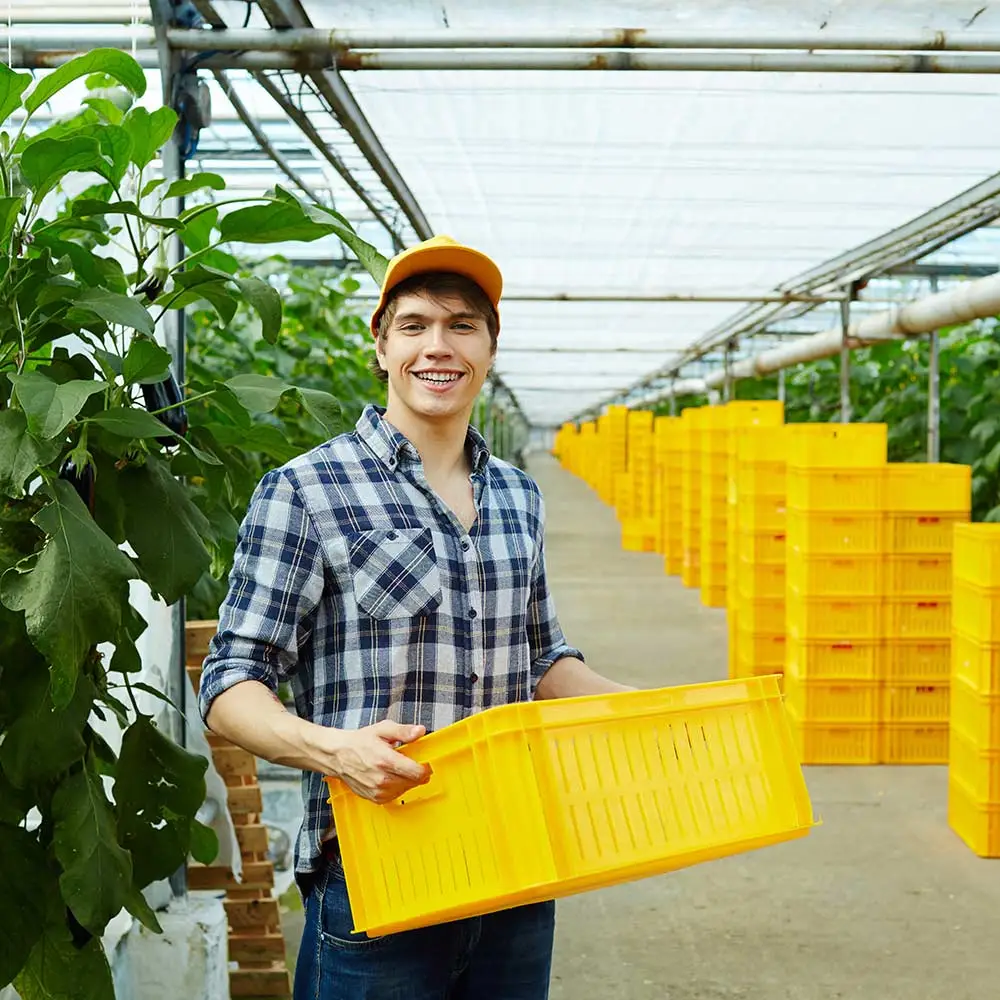
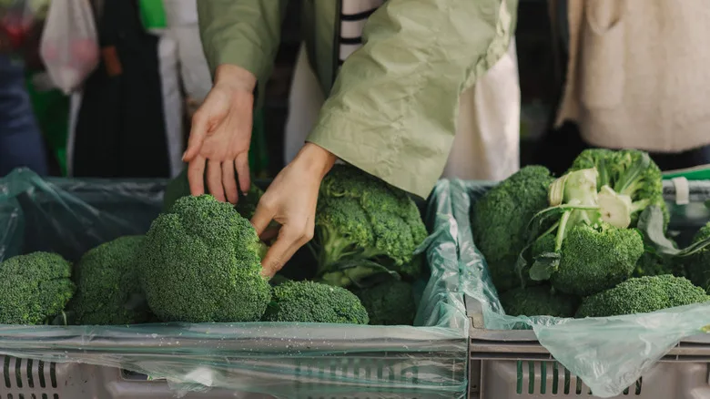
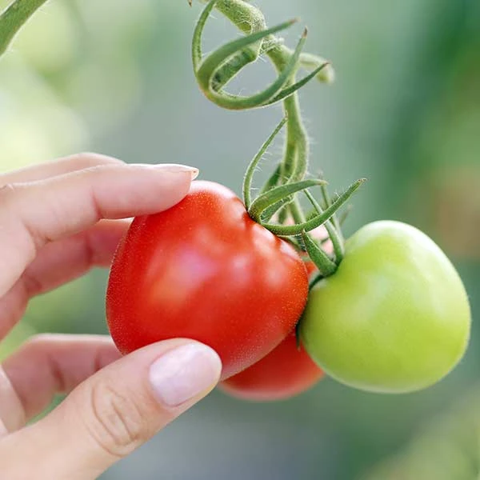
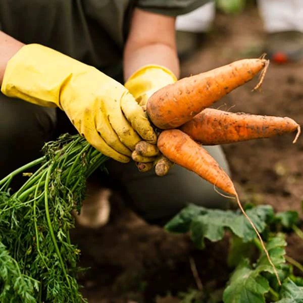
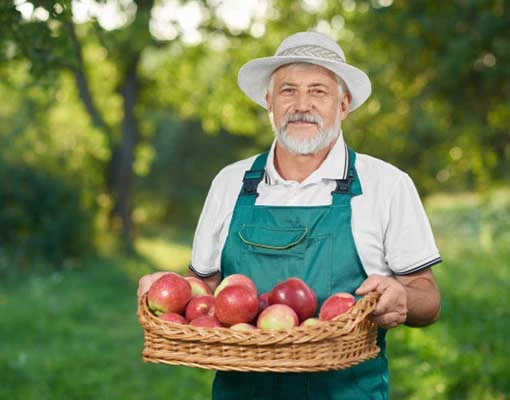

Fresh organic vegetables and fruits packed with natural nutrients to keep your body healthy, active, and full of energy every day.
We are a family-owned organic farm committed to bringing you the freshest vegetables, fruits, and natural products. Our farming practices are rooted in sustainability, respect for nature, and love for healthy living.
Years of Farming
Happy Families
Organic Certified

Award Winning
From field to your table — we offer a full range of organic farming services built around freshness and quality.
100% chemical-free farming using natural compost, rainwater, and traditional methods to grow the purest produce.
check_circle No ChemicalsFresh vegetables and fruits delivered right to your doorstep every morning, packed with care and love.
check_circle Same DayPremium quality heirloom and hybrid seeds for home gardens and commercial farms, sourced from trusted growers.
check_circle Premium SeedsExpert guidance on soil health, crop planning, irrigation, and sustainable agriculture practices for your farm.
check_circle Expert HelpBulk orders for restaurants, hotels, and retailers at competitive prices with guaranteed freshness and quality.
check_circle Bulk OrdersEducate your family and kids with guided farm tours, hands-on planting experiences, and harvest workshops.
check_circle Educational
Organic
Fresh Broccoli
₹89 ₹120

Farm Fresh
Red Tomatoes
₹45 ₹70

Organic
Baby Carrots
₹65 ₹95

Seasonal
Red Apples
₹120 ₹160
Acres of Farmland
Happy Customers
Product Varieties
Awards Won
Real stories from families who made the switch to fresh organic produce.
The vegetables are incredibly fresh! I can taste the difference from store-bought produce. My family loves the broccoli and tomatoes — we have been ordering every week for 6 months!
Priya Ramesh
location_on Chennai, Tamil Nadu
Best farm delivery service in the city! Always on time, perfectly packed, and the quality is unmatched. Their organic certification gives me total confidence in what I feed my kids.
Arjun Kumar
location_on Coimbatore, Tamil Nadu
I visited their farm and was blown away by how clean and natural everything was. The farm tour was wonderful for my children. We buy all our fruits and vegetables from them now!
Meena Vijay
location_on Tiruppur, Tamil Nadu
Join thousands of healthy families who get fresh organic vegetables and fruits delivered to their doorstep. First order gets 20% off!